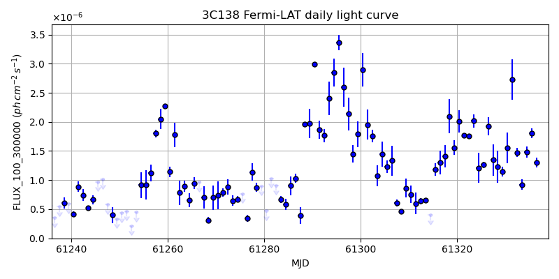
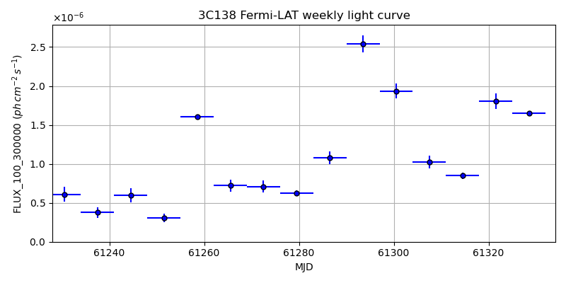
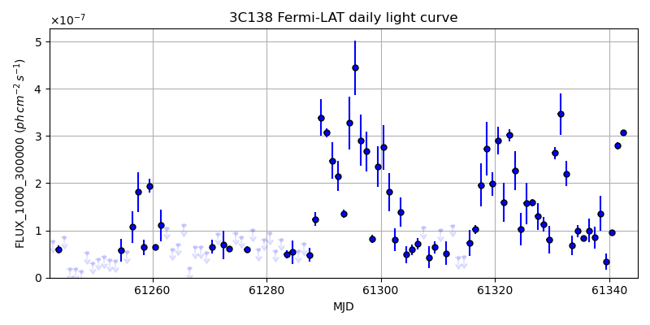
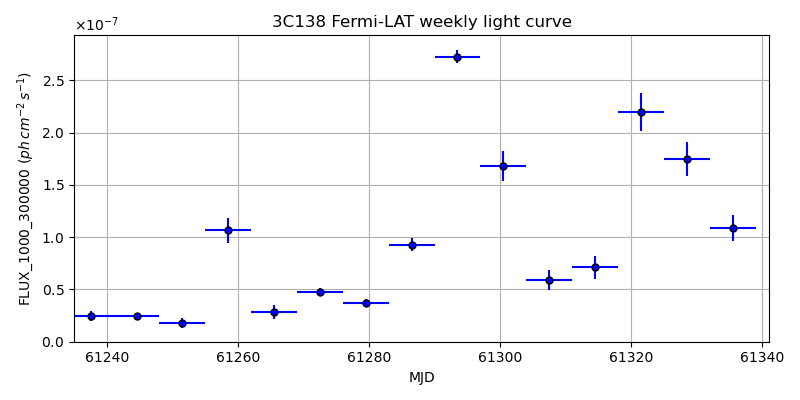

LAT Lightcurve site: https://fermi.gsfc.nasa.gov/ssc/data/access/lat/msl_lc/source/3C_138
NED: Query
Time of last update of this page: UT: 2026-10-17 15:16 (MJD: 61330.636)
| Property | Value |
|---|---|
| R.A. | 5:21:09.84 |
| Dec. | 16:38:20.4 |
| z | 0.759 |
| 3FGL SpectrumType | |
| 3FGL PL Index | -1.00 |
| 3FGL Flux_100_300000 | -1.00e+00 |
| 3FGL Flux_1000_300000 | -1.00e+00 |
| 3FGL Flux >200 GeV | -1.00e+00 |
| 3FGL Extrap. Crab >200 GeV | -1.00 |
| 3FGL Flux After EBL Absorption >200GeV | -1.00e+00 |
| 3FGL EBL Crab Fraction >200GeV | -1.00 |

| MJD | dMJD | Flux | dFlux | Frac3FGL | FracCrab>200GeV | EBLFracCrab>200GeV |
|---|---|---|---|---|---|---|
| 61325.50 | 0.50 | 1.26e-06 | 0.00e+00 | 0.00 | 0.00 | -0.00 |
| 61326.50 | 0.50 | 1.92e-06 | 0.00e+00 | 0.00 | 0.00 | -0.00 |
| 61327.50 | 0.50 | 1.35e-06 | 0.00e+00 | 0.00 | 0.00 | -0.00 |
| 61328.50 | 0.50 | 1.23e-06 | 0.00e+00 | 0.00 | 0.00 | -0.00 |
| 61329.50 | 0.50 | 1.15e-06 | 0.00e+00 | 0.00 | 0.00 | -0.00 |

| MJD | dMJD | Flux | dFlux | Frac3FGL | FracCrab>200GeV | EBLFracCrab>200GeV |
|---|---|---|---|---|---|---|
| 61293.50 | 3.50 | 2.54e-06 | 0.00e+00 | 0.00 | 0.00 | -0.00 |
| 61300.50 | 3.50 | 1.93e-06 | 0.00e+00 | 0.00 | 0.00 | -0.00 |
| 61307.50 | 3.50 | 1.02e-06 | 0.00e+00 | 0.00 | 0.00 | -0.00 |
| 61314.50 | 3.50 | 8.49e-07 | 0.00e+00 | 0.00 | 0.00 | -0.00 |
| 61321.50 | 3.50 | 1.81e-06 | 0.00e+00 | 0.00 | 0.00 | -0.00 |

| MJD | dMJD | Flux | dFlux | Frac3FGL | FracCrab>200GeV | EBLFracCrab>200GeV |
|---|---|---|---|---|---|---|
| 61325.50 | 0.50 | 1.57e-07 | 0.00e+00 | 0.00 | 0.00 | -0.00 |
| 61326.50 | 0.50 | 1.59e-07 | 0.00e+00 | 0.00 | 0.00 | -0.00 |
| 61327.50 | 0.50 | 1.30e-07 | 0.00e+00 | 0.00 | 0.00 | -0.00 |
| 61328.50 | 0.50 | 1.13e-07 | 0.00e+00 | 0.00 | 0.00 | -0.00 |
| 61329.50 | 0.50 | 8.04e-08 | 0.00e+00 | 0.00 | 0.00 | -0.00 |

| MJD | dMJD | Flux | dFlux | Frac3FGL | FracCrab>200GeV | EBLFracCrab>200GeV |
|---|---|---|---|---|---|---|
| 61293.50 | 3.50 | 2.73e-07 | 0.00e+00 | 0.00 | 0.00 | -0.00 |
| 61300.50 | 3.50 | 1.68e-07 | 0.00e+00 | 0.00 | 0.00 | -0.00 |
| 61307.50 | 3.50 | 5.89e-08 | 0.00e+00 | 0.00 | 0.00 | -0.00 |
| 61314.50 | 3.50 | 7.11e-08 | 0.00e+00 | 0.00 | 0.00 | -0.00 |
| 61321.50 | 3.50 | 2.20e-07 | 0.00e+00 | 0.00 | 0.00 | -0.00 |
--------------------------------------------------------- Using user-supplied coords: 5:21:09.84 16:38:20.4 2000 --------------------------------------------------------- FLWO UT night of: 2026-10-18 Local Sid. @ Midnight: 01:23 Sunset (-15.0) (local, UT): 18:56 01:56 Sunrise (-15.0) (local, UT): 05:22 12:22 Moonrise (local, UT): Moonset (local, UT): 22:59 05:59 Moon phase: 0.47 --------------------------------------------------------- AzTime LSID UT Obj_el Obj_az Mn_el Mn_az Sep. --------------------------------------------------------- 18:56 20:18 01:56 -25.8 47.7 30.5 195.3 151.2 19:26 20:48 02:26 -20.9 53.4 28.5 202.5 151.0 19:56 21:18 02:56 -15.6 58.5 25.9 209.3 150.9 20:26 21:48 03:26 -10.0 63.2 22.6 215.6 150.8 20:56 22:19 03:56 -2.7 67.5 18.8 221.3 150.6 21:26 22:49 04:26 2.1 71.5 14.5 226.6 150.5 21:56 23:19 04:56 8.0 75.3 9.9 231.4 150.3 22:26 23:49 05:26 14.2 78.9 5.0 235.7 150.1 22:56 00:19 05:56 20.5 82.6 0.2 239.8 149.9 23:26 00:49 06:26 26.9 86.3 -5.5 243.5 149.7 23:56 01:19 06:56 33.3 90.1 -11.3 247.0 149.5 00:26 01:49 07:26 39.7 94.2 -17.0 250.4 149.3 00:56 02:19 07:56 46.0 98.9 -22.8 253.6 149.1 01:26 02:49 08:26 52.3 104.3 -28.7 256.7 148.8 01:56 03:19 08:56 58.4 111.1 -34.7 259.8 148.6 02:26 03:49 09:26 64.2 120.1 -40.7 263.0 148.3 02:56 04:20 09:56 69.3 132.9 -46.8 266.4 148.0 03:26 04:50 10:26 73.3 151.8 -52.8 270.1 147.7 03:56 05:20 10:56 75.0 177.7 -58.9 274.3 147.4 04:26 05:50 11:26 73.7 204.2 -64.9 279.6 147.1 04:56 06:20 11:56 70.1 224.4 -70.8 287.0 146.8 05:22 06:46 12:22 65.8 236.6 -75.7 297.1 146.5 --------------------------------------------------------- Dark hours >55 deg.: 3.71 srcstart (UT): 2026-10-18 08:39 srcend (UT): 2026-10-18 12:22